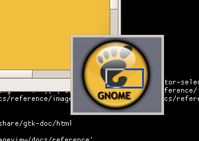

| GtkImageView Reference Manual | ||||
|---|---|---|---|---|
| Top | Description | Object Hierarchy | Implemented Interfaces | Properties | ||||
GtkImageNavGtkImageNav — Navigation window showing a thumbnailed overview of a GtkImageView.

Screenshot of an active navigation window
|
#define GTK_IMAGE_NAV_MAX_WIDTH #define GTK_IMAGE_NAV_MAX_HEIGHT GtkImageNav; GtkWidget * gtk_image_nav_new (GtkImageView *view); GdkPixbuf * gtk_image_nav_get_pixbuf (GtkImageNav *nav); void gtk_image_nav_grab (GtkImageNav *nav); void gtk_image_nav_release (GtkImageNav *nav); void gtk_image_nav_show_and_grab (GtkImageNav *nav, int center_x, int center_y);
GObject
+----GInitiallyUnowned
+----GtkObject
+----GtkWidget
+----GtkContainer
+----GtkBin
+----GtkWindow
+----GtkImageNav
GtkImageNav is a popup window that shows a downscaled preview of the pixbuf that GtkImageView is showing. The user can drag around a rectangle which indicates the current view of the image.
This class is used by GtkImageScrollWin itself. It is probably not very useful for clients of this library.
GtkImageNav has the same keybindings that GtkImageView has. All keypresses that it receives are passed along to the view.
#define GTK_IMAGE_NAV_MAX_WIDTH 192
The maximum width of the drawing area in the widget.
#define GTK_IMAGE_NAV_MAX_HEIGHT 128
The maximum height of the drawing area in the widget.
GtkWidget * gtk_image_nav_new (GtkImageView *view);
Creates a new GtkImageNav for showing thumbnails of the view. The default values are:
NULL
|
a GtkImageView. |
Returns : |
a new GtkImageNav showing the view. |
GdkPixbuf * gtk_image_nav_get_pixbuf (GtkImageNav *nav);
Returns the downscaled pixbuf of the views pixbuf that this
GtkImageNav shows, or NULL if that pixbuf has not been created
yet.
The pixbuf is by default NULL.
|
a GtkImageNav. |
Returns : |
the pixbuf in the navigation area this image navigator
shows, or NULL if none exist.
|
void gtk_image_nav_show_and_grab (GtkImageNav *nav, int center_x, int center_y);
Show the GtkImageNav centered around the point (center_x,
center_y) and grab mouse and keyboard events. The grab continues
until a button release event is received which causes the widget to
hide.
|
a GtkImageNav |
|
x coordinate of center position |
|
y coordinate of center position |